鹭羽 发自 凹非寺
量子位 | 公众号 QbitAI
一睁眼！陈天桥带队的大模型黑马MiroMind再度满血归来——
正式发布新一代重型推理智能体：MiroThinker-1.7和MiroThinker-H1。
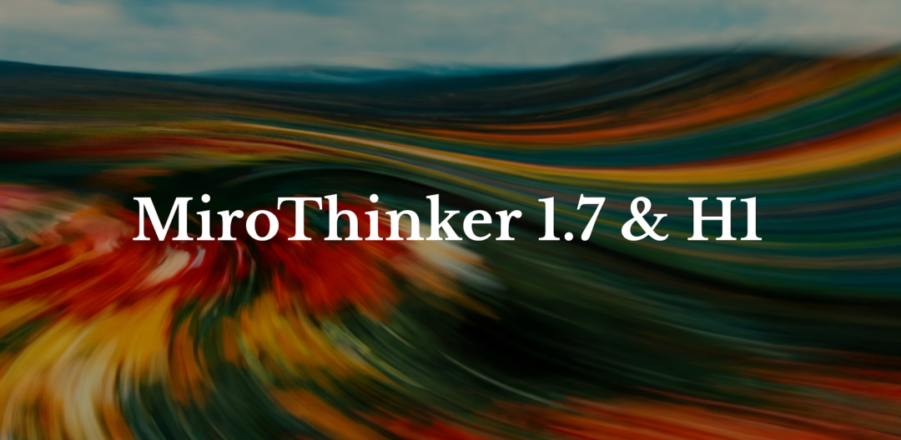
何为重型？延续V1.5的深度推理基因，但任务更复杂、结果更精确。
眼见为实，以基准测试为例。
MiroThinker-1.7系列发布即霸榜多项深度研究任务测试，其中MiroThinker-H1刷新SOTA，超越Gemini-3.1-Pro、GPT-5.4-Thinking、Claude-4.6-Opus等一众行业顶尖闭源模型：
BrowseComp（网页检索类大模型基准测试）：88.2% BrowseComp-ZH（BrowseComp的中文适配版本）：84.4% GAIA-Val-165（GAIA基准测试验证集）：88.5% HLE-Text（人类终极测试）：47.7%
另外开源模型MiroThinker-1.7（235B）和小尺寸的MiroThinker-1.7-mini（30B）也在效率与性能之间达到了最优平衡。
换言之，针对差异化的复杂推理需求，MiroMind已经为开发者们准备好了各式精准匹配的模型方案，致力于将算力用在刀刃上。
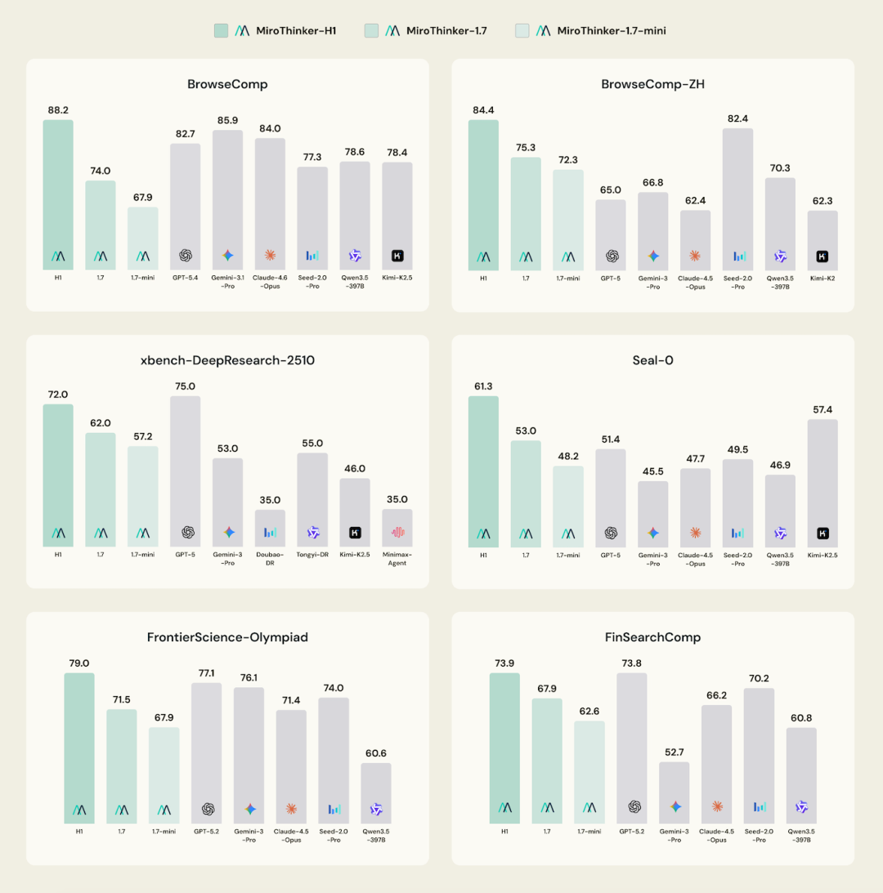
此外，新模型不仅通用任务强，在科技金融等专业领域同样表现亮眼，它跳出了传统LLM聊天交互的范畴，转而能够承担起真实的长链条智力任务。
而这是以牺牲模型推理速度为代价的，所以u1s1，MiroMind真的很大胆。
当其它大模型厂商都在卷速度，MiroThinker系列专为复杂长期任务而生，结果V1.5大获全胜、V1.7再度突破。
下面老规矩，我们实测走起～
会赛车、买黄金，MiroThinker才是真懂行
实测之前，先简要介绍一下交互界面。
和常规大模型对话窗口一致，左下角Pro按钮开启专业模式，模型尺寸更大、推理更深入，推理时间也会相应延长。
支持文件上传和语音输入，还有新上线的MiroMind App可用。
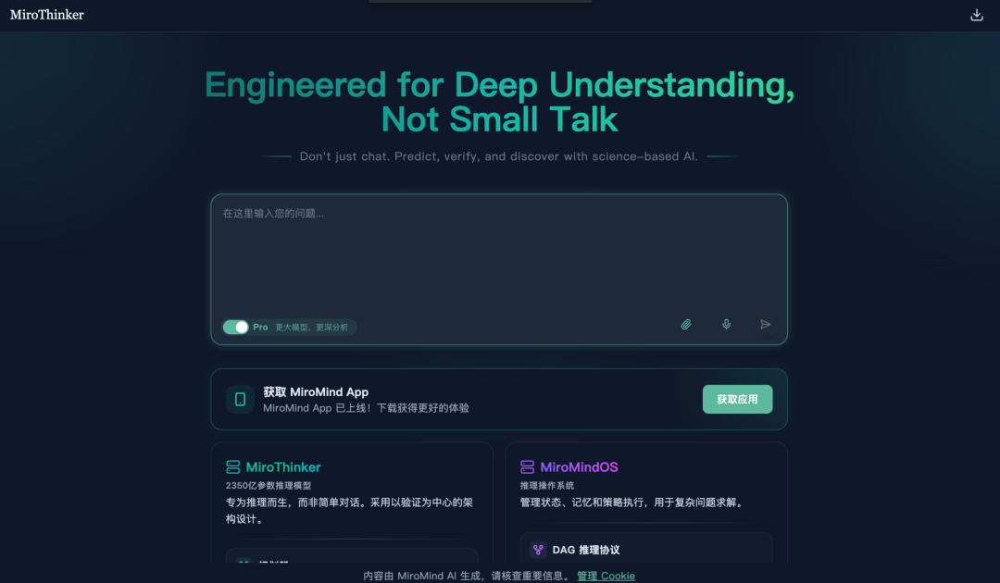
话不多说，先拿最近的F1上海站正赛练练手。众所周知，受赛车性能、车手状态、环境因素影响，F1比赛结果预测难度相当之高。
这就非常考验模型实时抓取信息、综合判断多方面因素的能力。
于是在比赛前2小时、比赛中1小时、比赛最后半小时三个关键时间节点，我们分别让MiroThinker实时预测排名情况，并与真实结果进行比对。
首先是比赛正式开始前2小时：
在即将举办的F1上海站上，对选手排名进行预测。
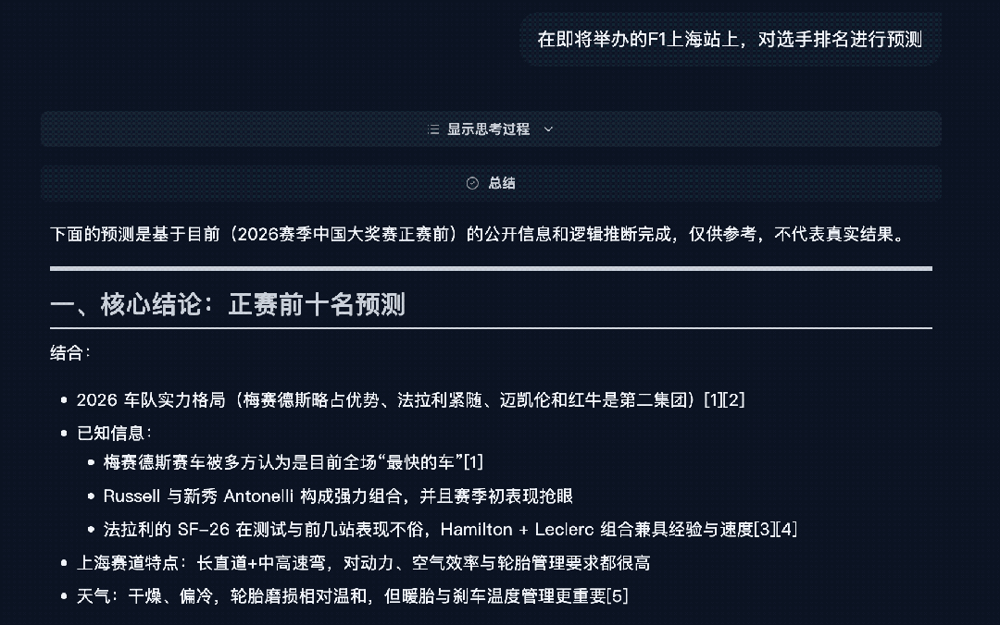
预测结果如何暂且不提，光论推理过程和答案的详实程度，就已经遥遥领先～
仔细看模型思考过程，MiroThinker建立起一条极为完整的信息搜索路径，包括比赛策略、车队实力情况、潜在变数等：
确认正赛时间和地点→收集最新的上海站排位赛、冲刺赛以及当前赛季情况辅助→从规则变化到天气情况逐步细化→汇总给出合理预测。
其中每一步都在反复验证，以确保后续推理的可靠性。
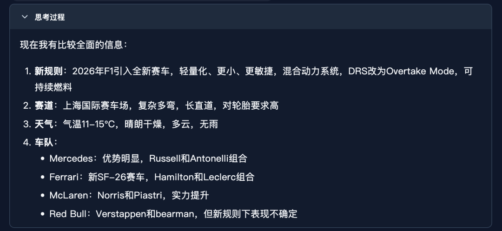
至于最终给出的赛前预测也很全面，先是直接甩出核心结论一目了然，预测梅赛德斯大获全胜、法拉利紧随、迈凯伦和红牛位列第二梯队。
P.S.模型用词精准专业，使用“完赛”这一定语，也是未卜先知到了本次比赛的退赛盛况（doge）
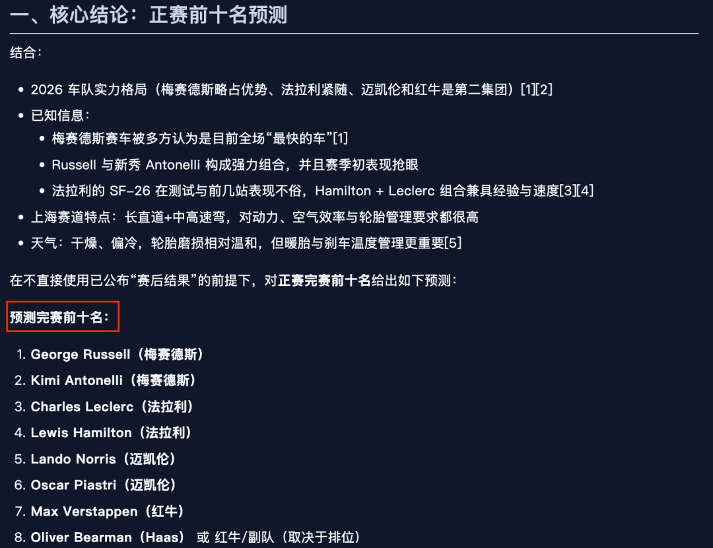
然后给出简要的预测逻辑以及观赛建议，用户体验感拉满。
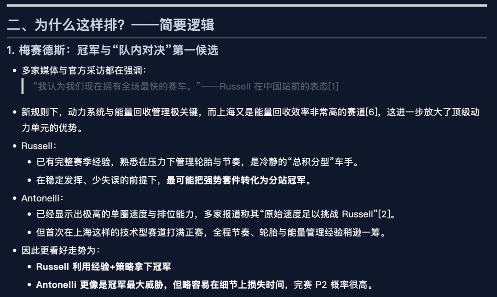
值得一提的是，MiroThinker还支持一键生成网页报告。就这排版这审美，妥妥的打工人福音～
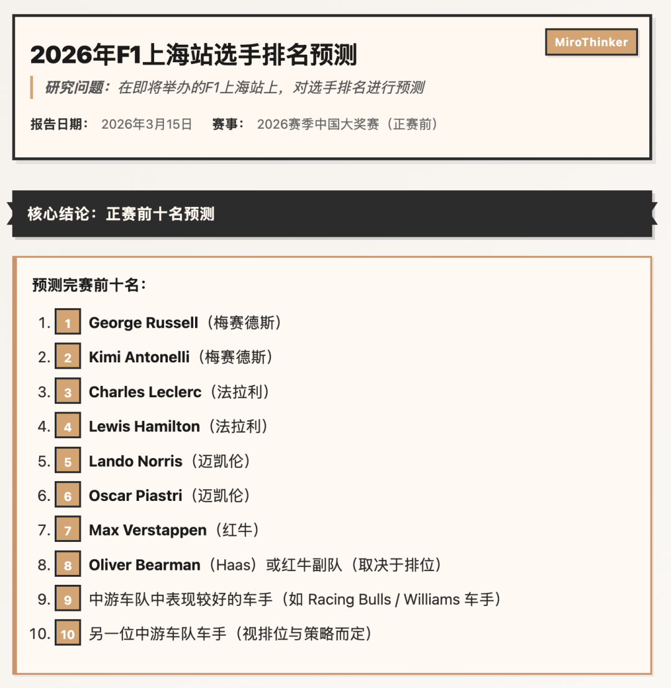
我们也将该问题同时交给ChatGPT、Gemini和DeepSeek进行预测。
ChatGPT回答相对简略，对影响变量和预测理由描述较少。
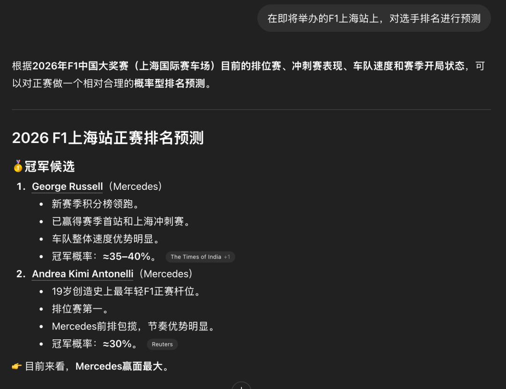
Gemini的亮点是除了列举选手排名，还提供赛事核心看点，但在整个答案的完整度上还是MiroThinker占优。
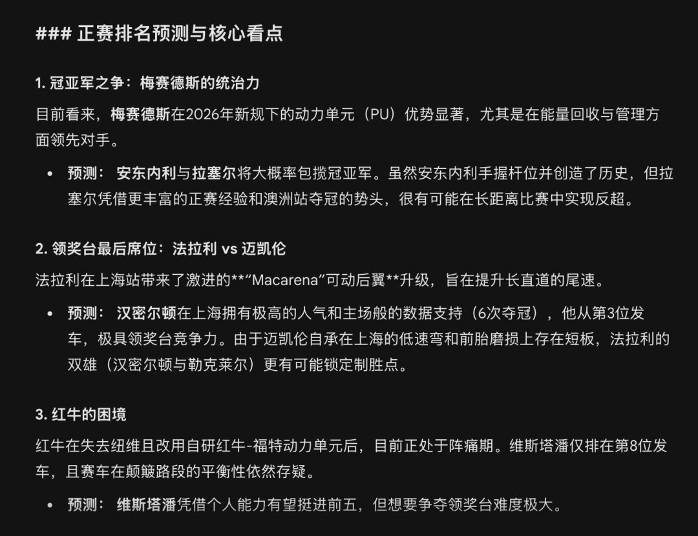
DeepSeek的预测结果只关注到了选手历史成绩和车辆情况，考虑得不够深入。
反观MiroThinker，它是所有模型中，唯一关注到当前天气状况的推理大模型，足以证明其专业度。
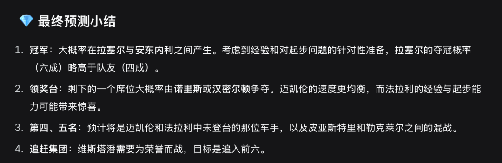
再看比赛进程中1小时，MiroThinker对实时信息的抓取更为突出，既关注到了当前的退赛情况，也能有效分析出每位选手的比赛节奏和车队战略，逐步微调自己的预测答案。
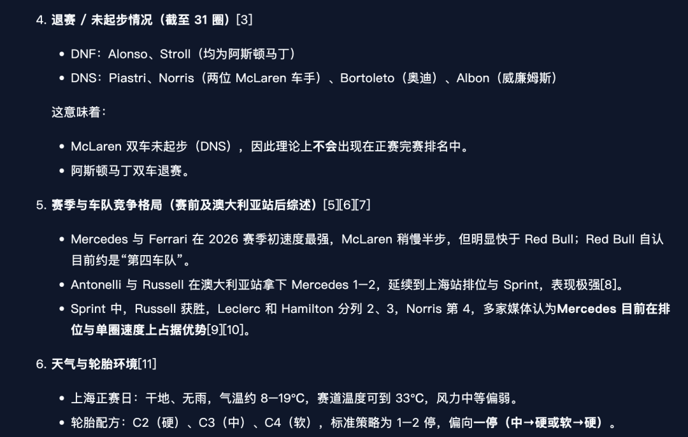
到最后30分钟，MiroThinker给出的预测答案已经和最终结果完全一致。
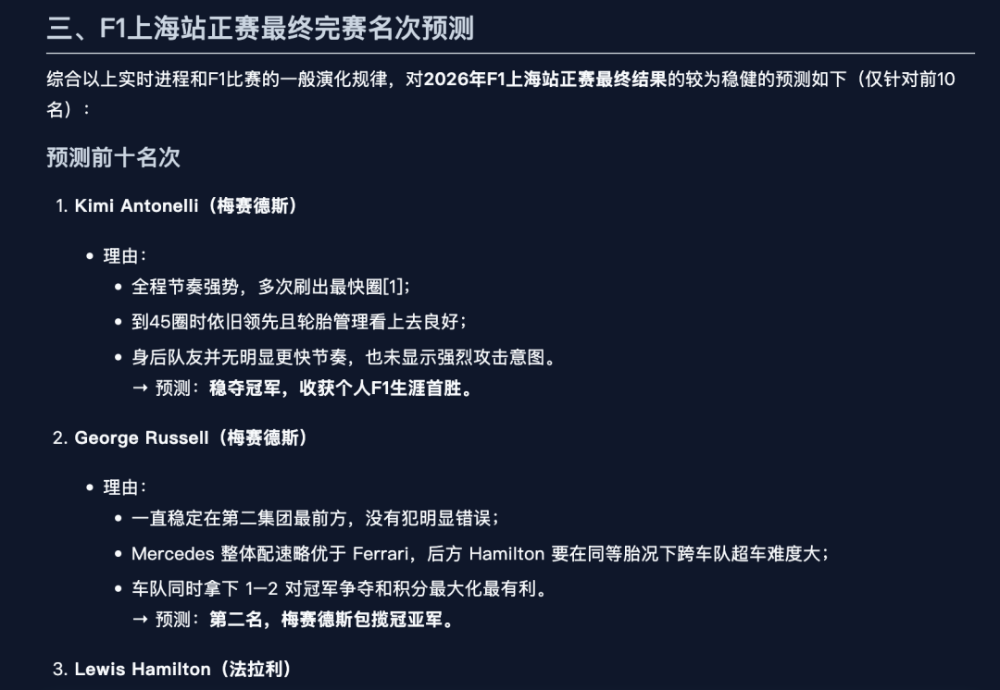
由此可见，MiroThinker在三次预测中逐步完成了信息收敛和复盘优化。最终实现，即使F1赛事情况瞬息万变，但每一次MiroThinker都能给出最贴合当前情况的预测。
有趣的是，再回过头看第一轮预测结果，几乎所有大模型都预测梅赛德斯包揽前两名，但在第三名的预测上争斗相当激烈，MiroThinker给了和法拉利携手多年的勒克莱尔，ChatGPT和Gemini支持技术老道的汉密尔顿，DeepSeek反手给了诺里斯。
结果万万没想到，迈凯伦双车退赛、法拉利内斗，勒克莱尔再度陷入第四魔咒，“must be the water”（那一定是水）导致的～（doge）
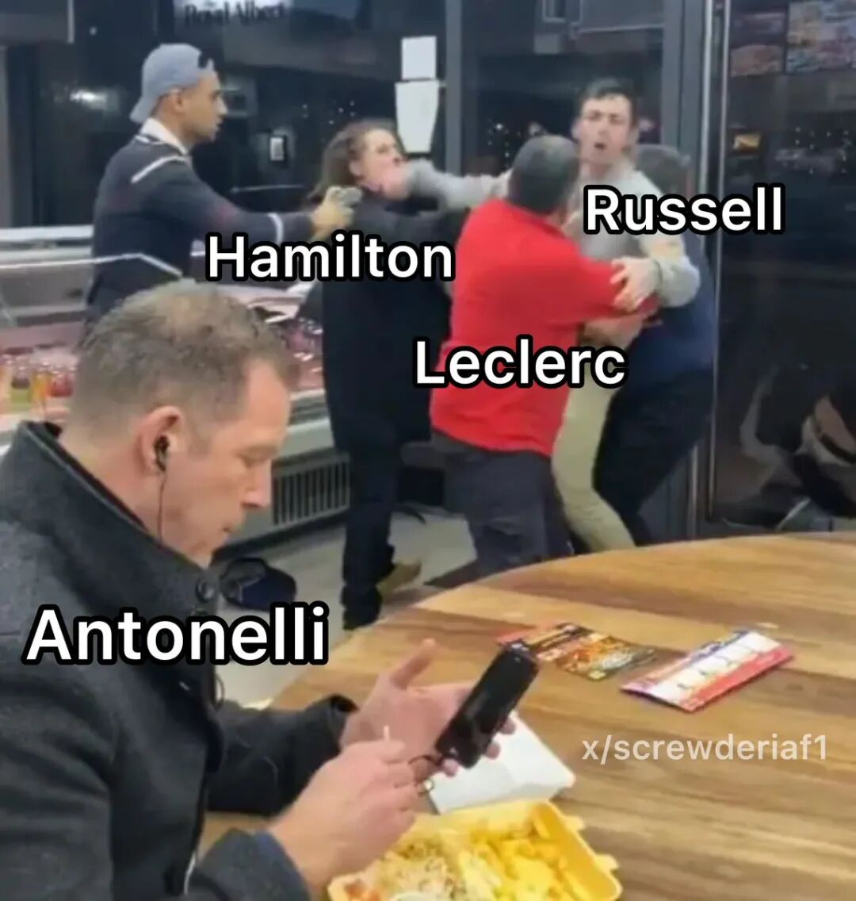
此前，我们也尝试用MiroThinker预测金融市场，提前15天预估黄金价格。
2026年2月25日的黄金价格（XAU/USD）会是多少？
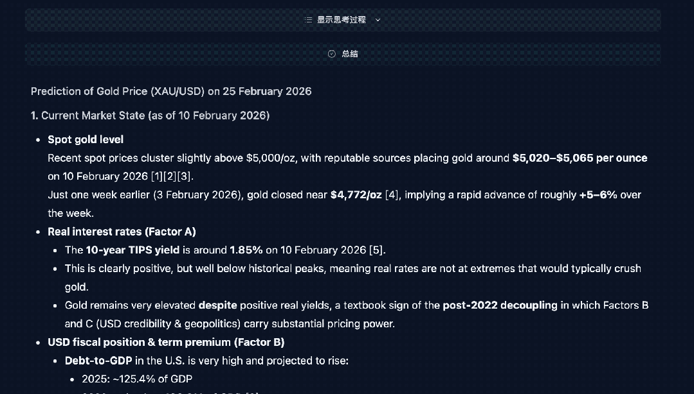
模型当时预测金价是$5185/oz，实际Fortune报价$5181，150 Currency报价$5185.89，CME GCG26收盘价为$5206.40，误差仅为0.08%（$4），保持在合理误差范围之内。
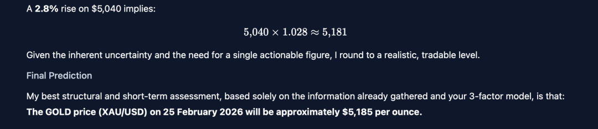
综合来看，无论是短期的通用场景预测，还是中长期的专业场景预估，MiroThinker都能做到有理有据，实际结果与模型预测高度吻合，且思考过程全部清晰可见。
虽然它还没有做到像其它模型一样秒出答案，需要一到两分钟的等待时间，但在答案完整度和逻辑链上已经是next level，足以应对绝大多数真实推理任务。
并非简单做加法，而是精准Scaling
那么为什么MiroThinker能够做到这一点呢？
还要说回模型的核心技术突破——重型求解器（heavy-duty solver）。
当前行业内要提升推理深度，普遍采用的方案是通过强化学习将模型CoT运算时间延长，这类优化后的模型在数学、编程等领域表现突出。
而MiroThinker-1.7不仅仅是延长思考时间，更是强调模型的可验证性和有效交互。具体表现在两项关键技术升级上：
1、升级智能体原生训练。
MiroMind注意到一个现象，如果模型每一步决策本身就质量不高，即使让模型完成更多轮的交互，最终结果也只是在放大低质量决策。
所以提升推理性能的关键不是交互次数的叠加，而是专注增强每一步的质量，也就是提升模型的智能体原生能力（agent-native competence），包括三步：
规划更可靠：一开始就把问题拆对、把路选对。 推理更准确：每一步判断都经得起验证和反思。 长程不走偏：在复杂任务中始终对齐最终目标。
为此，MiroThinker-1.7在训练过程中新增了一个mid-training（中期训练）阶段。
借助大规模的高质量任务数据，重点训练模型的规划、推理和总结能力，使其建立起更强的Agent基础能力，比如目标分解、选择合适的工具调用、理解工具返回结果、整合生成最终答案。同时该阶段也扩大了模型的通用性。
在此基础之上，还会加入SFT（监督微调）、DPO（偏好优化）、RL（强化学习）进一步将Agent能力内化，实现长时任务稳定推理。
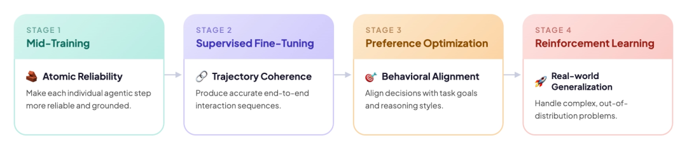
2、以验证为核心的重型推理模式。
然而，要提升单步推理质量，也不能仅仅依靠模型自身的Agent推理能力，还需要引入验证器加以约束，可分为局部验证和全局验证：
局部验证：在推理的每一步，系统都会停下来自我审查，只有通过了局部验证，系统才会允许继续探索该条路径。在一定程度上，局部验证能够打破传统AI的概率偏置，找到也许当下瞬时概率较低但实则最正确的路径。
全局验证：在系统生成了几条完整的推理路径后，模型会回溯整条数据链，确保最终答案是推理环节最严密的，而不是语义最流畅、看似逻辑自洽的。
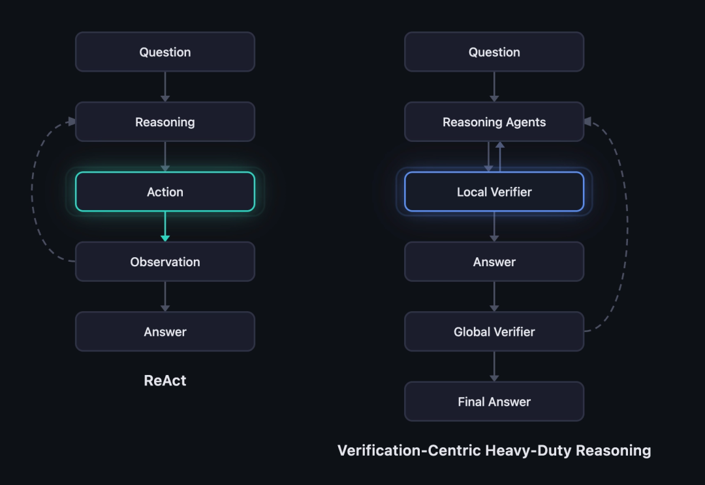
总的来说，前者显著增强智能体原生能力，后者提升交叉验证可信度，二者深度融合，让模型在面对复杂推理问题时能够表现出精准可验证的交互潜力。
另外值得关注的是，MiroMind还观察到一个“反直觉”现象：在引入验证机制后，模型交互步骤数量明显减少。
按照常规逻辑，往往步数越多、思考越久，模型性能就越强，即Heavy-duty（重型）。
而该现象则说明验证器在这里充当的还有过滤器的作用，能够帮助模型及时筛除掉没有信息增益的步骤，将算力集中分配到真正推动问题求解的环节上。
虽然总步数减少了，但每一步包含的逻辑推理质量更高了，整个推理过程变得高效且精密。
这就引出了MiroThinker系列模型的核心理念——扩展有效交互。
抓住交互关键，“慢”也能弯道超车
从V1.5到V1.7，模型的每一次迭代都能产生行之有效的结果，这未尝不是对MiroThinker交互理念的有力验证。
简单来说，MiroThinker强调慢下来、想更多。
虽然通过增加对话次数、工具调用，能够非常直观迅速地刷新基准测试分数，但一旦中间步骤错误，错误就会像滚雪球一样累积，直至系统彻底崩溃。
而“慢”推理不追求秒回，而是在行动前暂停、验证、权衡，确保在当前复杂场景下推得深、推得对。
这种看似不讨巧的选择，反而成就了MiroThinker在大模型市场中独树一帜的风格——不急于给出答案，而是专注求证问题背后的深层逻辑。
在算力约束与复杂任务的博弈中，MiroThinker没有盲目堆砌算力，而是更像一位深谙最优路径的理科生，精打细算将算力落在该去的地方。
结果也很显而易见，只要踏实做好有效交互，慢也不等同于落后，反倒是助力LLM走向真实物理世界更扎实。
事实上，如果仔细看MiroMind的人才梯队建设，同样也很“稳”。
从MiroMind诞生之初，时任盛大副总裁、现任MiroMind COO邴立东博士便开始在新加坡牵头组建初始团队，一路保驾护航MiroThinker来到V1.7。
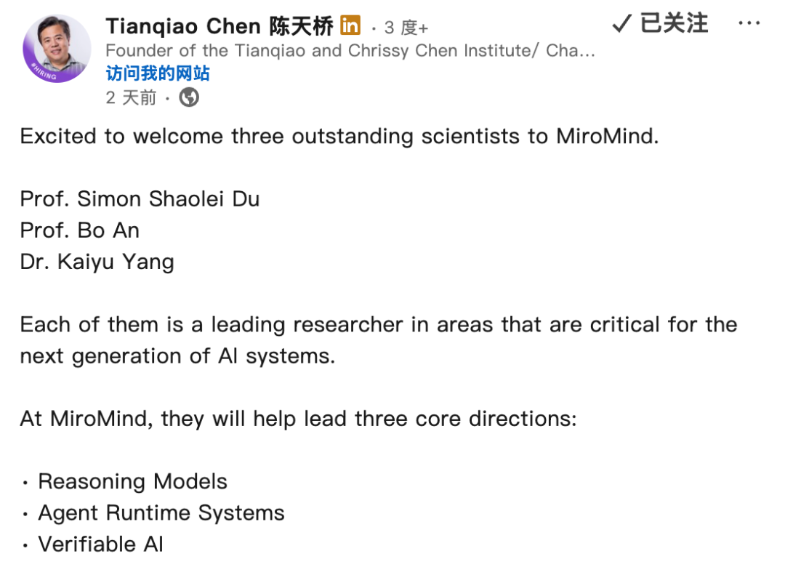
如今团队实力更是如虎添翼，三位世界级顶尖AI科学家杜少雷、安波和杨凯峪同时加入MiroMind。
他们无一不是模型推理领域的熟手，长期致力于开发前沿大模型的推理决策能力。他们的加盟，将共同推动MiroThinker朝着会思考、能行动、可信任的方向进化，从而直面科学、金融和工程领域的实际问题。
至此，随着核心团队逐步到位，MiroMind已经准备好更猛烈的下一阶段冲锋。
有技术、有人才、有资金，还有一以贯之坚持的理念，四角齐全的MiroMind，所以看似入场大模型姗姗来迟，实则每一步都稳扎稳打，后来者居上也就不足为奇了。
P.S.新模型即将上线官网（https://dr.miromind.ai）提供体验。
GitHub：https://github.com/MiroMindAI/MiroThinker
HuggingFace：https://huggingface.co/collections/miromind-ai/mirothinker-17
一键三连「点赞」「转发」「小心心」
欢迎在评论区留下你的想法！
— 完 —
🌟 点亮星标 🌟